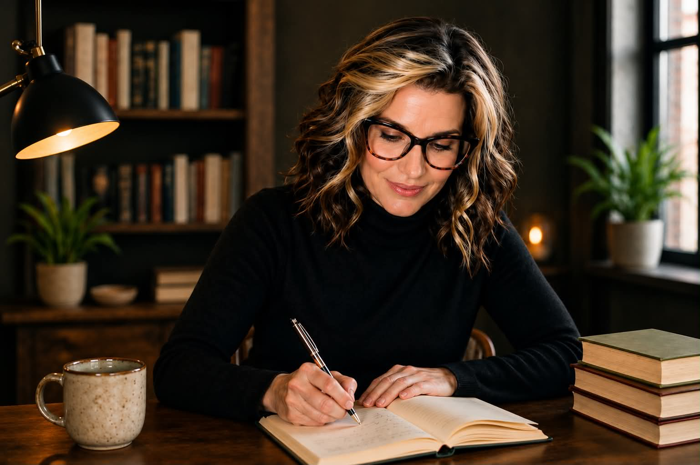

Appalachian State University
Social media is older than your phone. Every movement that ever changed anything ran on a media theory. We study how they built connection and spread ideas, then use that to put the "social" back into social media.

Hi, I'm Dr. Long. I'm a writer, a professor of rhetoric and writing, and a TEDx speaker, and I've spent my career studying how words move people, on the page, in a crowded room, and across a network. I'm the author of a book on a nineteenth-century murder and a memoir, Uprooted, about adoption, reunion, and the long search for where we belong. Belonging turns out to be the thread through everything I do, including this class.
I come at social media sideways. Long before the phone in your pocket, movements built connection with pamphlets, newspapers, banners, carbon copies passed hand to hand, and a lot of face-to-face talk. I study that long history. I also practice narrative medicine, the evidence-based use of writing to heal and connect people in clinics and communities, so I know first-hand that a medium is never neutral and that real connection is a skill you can build.
Off campus, I work in sustainable agriculture and food justice and lead Slow Food Tri-Cities, so a lot of my own organizing happens around dinner tables and on farm plots, some of the oldest social media there is. This class is part media history, part rhetoric, part hands-on making. We read how abolitionists, suffragists, farmworkers, and the people who retyped banned books by hand under censorship built their movements, then we carry those lessons to the platforms you already use. Somewhere in there, we put the social back into social media.
Curious about my life beyond campus? There's my writing at The Writing Cure and my food work at Slow Food Tri-Cities.
This section of ENG 4100 focuses on writing for digital and social media, with emphasis on ethics, audience, circulation, and social impact. But it's the people, the ability to connect humans through language, that elevates language from transactional to radical and revolutionary. That's what this class is about.
Tuesdays are the analog version of social media, a historical case plus a live human-connection or observation exercise. Thursdays take that idea to contemporary platforms, where you analyze and make real digital work. The spine is social-change movements, slow and fast, from the Federalist Papers and the abolitionist press to the Zapatistas and today's networked protest.
By the end, you will have: